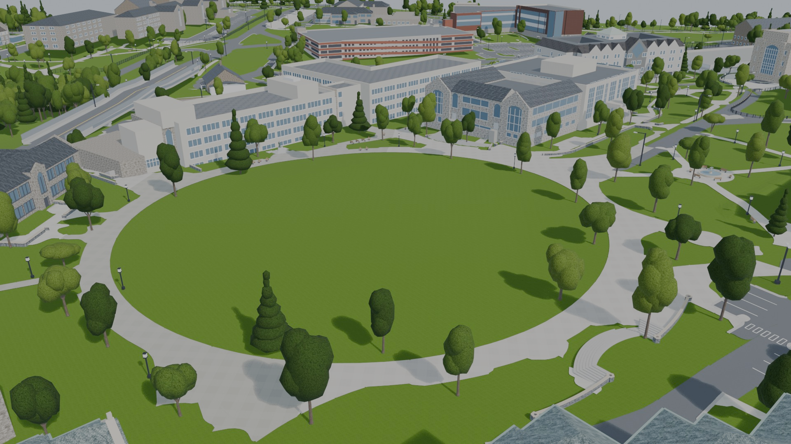
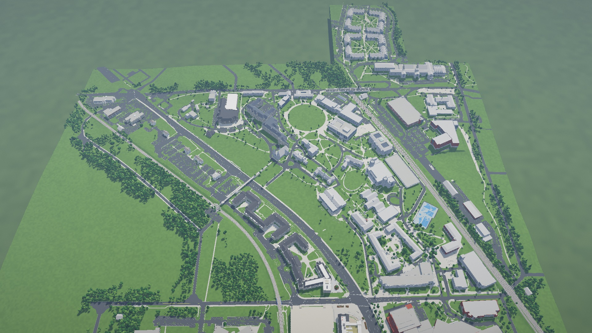
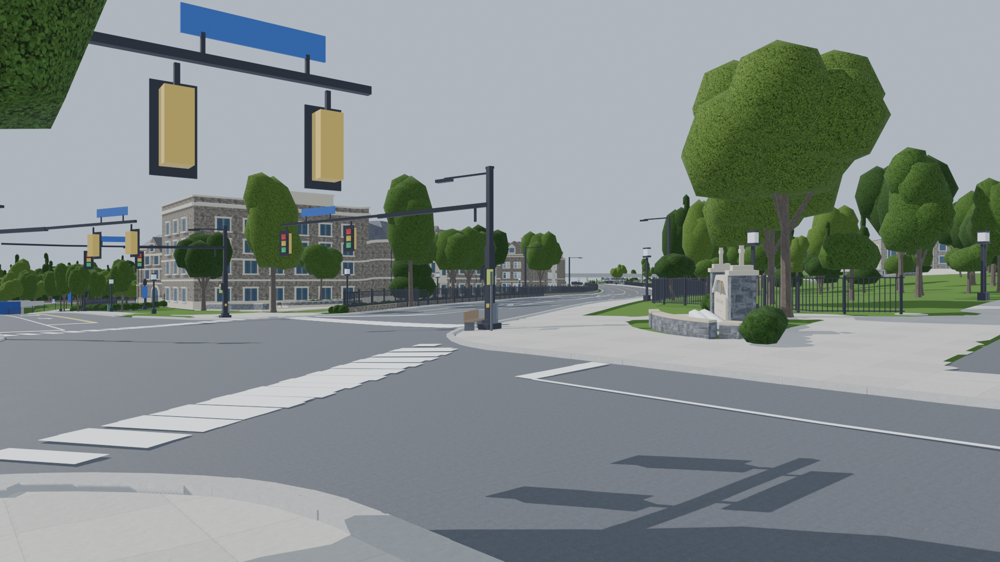
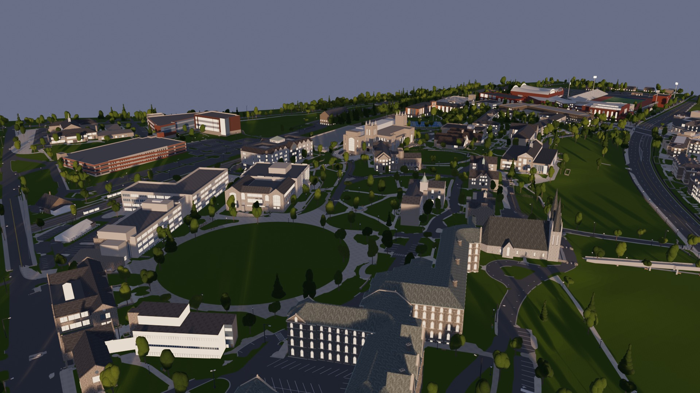
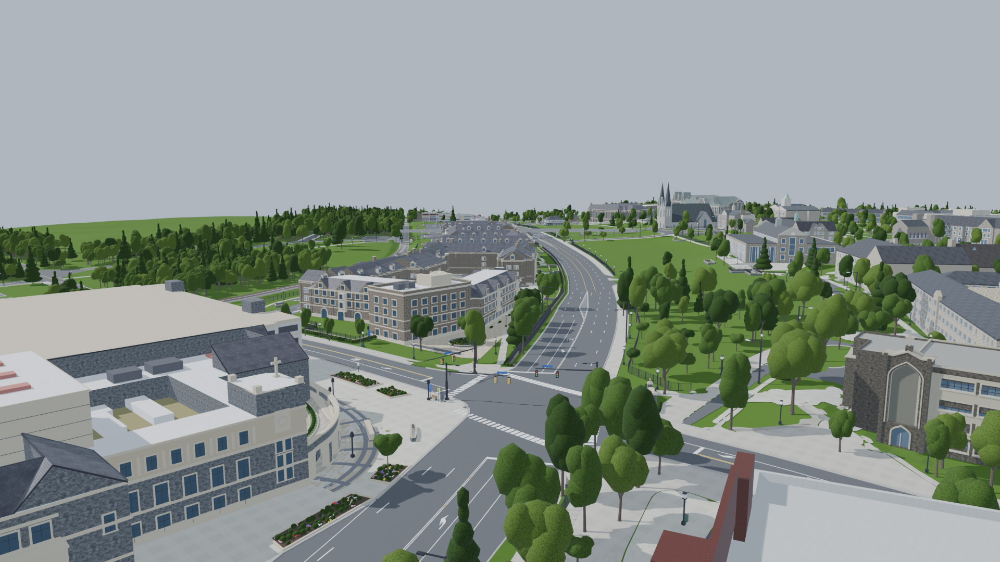
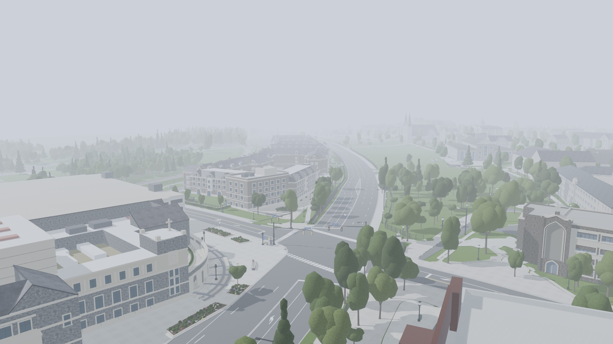
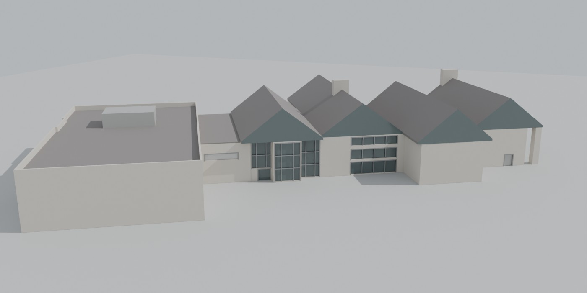
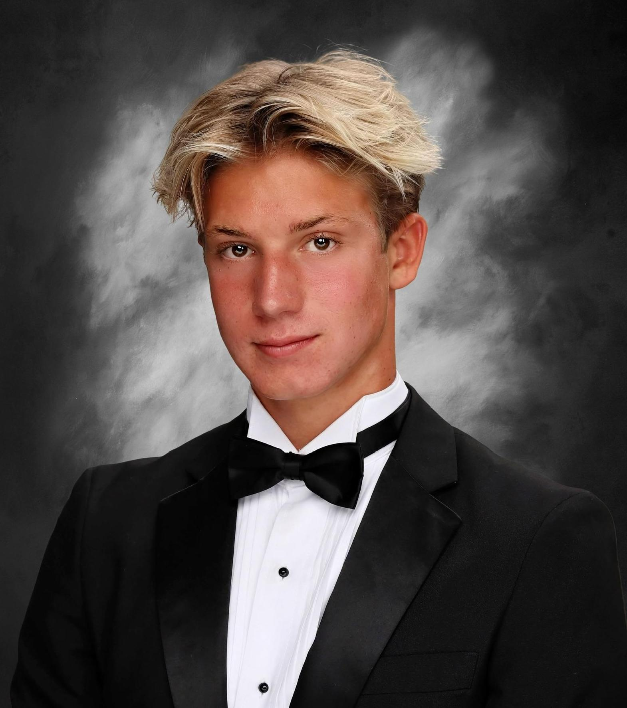

Built so far
An assembled Blender campus environment, architectural models, road and terrain geometry, interoperable FBX assets, and a campus fly-through.
CAMPUS AS A LIVING LABORATORY · 2026–ONGOING
Build the campus. Understand its movement.
Explore what could change.

THE BIG PICTURE
Getting to class, crossing Lancaster Avenue, finding a shuttle, or leaving a game: small journeys connect campus life. They also raise larger questions about safety, access, emissions, and resilience.
Villanova World Model starts with a three-dimensional representation of the campus we share. Our vision is to connect that physical environment with models of how people and vehicles move, creating a living laboratory for testing ideas before they reach the street.
As Villanova’s campus network evolves, the longer-term ambition is a shared climate–mobility platform for teaching, research, and campus conversations—with a path toward multi-campus scenarios involving Main Campus, Cabrini, and Rosemont.
EXPLORE THE CAMPUS
A short fly-through of the assembled 3D environment, created by the student project team.
3D visualization · November 2026. The film showcases the campus environment, not simulated traffic outcomes.
A CONNECTED PHYSICAL ENVIRONMENT





RESEARCH FOCUS & METHODS

Reconstruct buildings, roads, sidewalks, and terrain using architectural elevations, campus CAD, geographic data, and field references. Reusable building specifications and FBX export checks support a consistent modeling workflow.
Bring campus geometry into a common coordinate system and real-world scale. This spatial foundation connects buildings and ground surfaces to the places where travel happens.
Develop toward multimodal, agent-based simulation of pedestrians, bicycles, shuttles, and vehicles. Planned Unreal Engine integration will connect the campus environment with interactive transportation experiments.
Explore future scenarios for extreme weather, disrupted routes, shuttle service, and low-car events. Ask how travel time, accessibility, and emissions change—and who bears the greatest burden.
Make future experiments useful in classrooms and campus planning. Visual comparisons and reusable workflows can help students and collaborators ask practical “what if” questions together.
WHERE WE ARE
An assembled Blender campus environment, architectural models, road and terrain geometry, interoperable FBX assets, and a campus fly-through.
Complete and field-check remaining campus geometry, refine the reusable modeling workflow, and prepare the environment for simulation integration.
Couple physical space with traffic and climate scenarios, then translate results into accessible comparisons for teaching and collaborative planning.
Project status reflects the November 2026 materials. The visual model is a research prototype; a calibrated traffic and weather simulation is a development goal.
THE PEOPLE BUILDING IT
Undergraduate researcher
2025–2026 Hennessy Undergraduate Research Award

Undergraduate researcher
Villanova World Model
Research direction: Chenfeng Xiong · Villanova Human Mobility Labs
Start a conversation